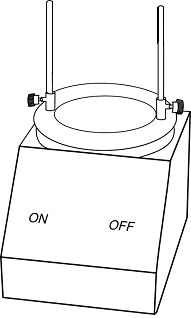
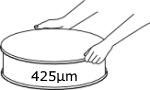
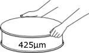

PLASTIC LIMIT TEST
Objective:
To determine the consistency limit of soil sample by plastic limit test.
Apparatus used:
Weighing machine, Glass plate, 425µm sieve, Porcelain evaporating dish, Moisture can etc.


 Description
The plastic limit is one of the measured parameters of the Atterberg limits, which is used for differentiating the consistency states of finer particles in soil material. If coarser particles are present (coarse sand, gravel, cobbles), the finer particles act as matrix and may govern the behavior of the soil mass. Consistency states depend on water content; with increasing water, the consistency states are solid, semisolid, plastic, and liquid.
Description
The plastic limit is one of the measured parameters of the Atterberg limits, which is used for differentiating the consistency states of finer particles in soil material. If coarser particles are present (coarse sand, gravel, cobbles), the finer particles act as matrix and may govern the behavior of the soil mass. Consistency states depend on water content; with increasing water, the consistency states are solid, semisolid, plastic, and liquid.
Take air dried soil in a Porcelain evaporating dish and measure it up to 20g using weighing machine.


Place 425µm sieve on the pan and pour weighed quantity of air dried soil to the sieve then close the lid.


Place the set of sieves in the mechanical shaker and allow to shake for 10 minutes.



Collect the residue left on the 425µm sieve in a separate container.
 

Mix the soil sample thoroughly and uniformly with water till the soil mass becomes plastic enough to be easily molded with fingers.


Make small balls from the soil sample.

Similarly make balls from the remaining soil sample and place the balls in a container.
Form a uniform thread from the obtained soil ball by rolling it on a glass plate using your palms or fingers.
Place a ball on the glass plate and start rolling it.
Measure the weight of the empty container.
Weight of empty container (W1) = _________ g
Measure the weight of the crumbled soil which is collected in the container.
Weight of container + wet soil (W2) = _________ g
Collect the crumbled soil sample in the container.
Place the container with crumbled soil sample in the oven for 24 hours at 115°C temperature.


After 24 hours
Measure the weight of the dry soil sample.
0.003
Weight of container + dry soil (W3) = _________ g
Observations:
| Trial No. | |
| Weight of container, W1 | |
| Weight of container + wet soil, (W2) | |
| Weight of container + oven dry soil, W3 |
Variables used in calculation:
| Weight of water, W4 (g) | W2 - W3 |
| Weight of dry soil, W5 (g) | W3 - W1 |
Calculations:
| Water content, W = | Weight of water⁄Weight of dry soil x 100 |
| = | % |
Repeat the procedure from step 7 - 12
Observations:
| Trial No. | Weight of container, W1 (g) | Weight of container + wet soil, W2 (g) | Weight of container + oven dry soil, W3 (g) | Weight of water, W4 (g) W4 = W2 - W3 | Weight of dry soil, W5 (g) W5 = W3 - W1 | Water content, W (%) W = W4⁄W5 x 100 |
Calculations:
| Average water content = | % |
| Plasticity index, IP = | WL - WP |
| = | % |
WP = Plastic limit of given soil sample = Average water content
WL = Liquid limit of given soil sample = 25.3 (Obtained in Liquid limit test experiment)
Plastic limit of given soil sample